Modified to just use Pointer Events (and PEP).
Click and drag using mouse, stylus or touchscreen to rotate the images.
Adapted from CodePen: 3D jQuery rotator – see the article 3D rotator using jQuery
 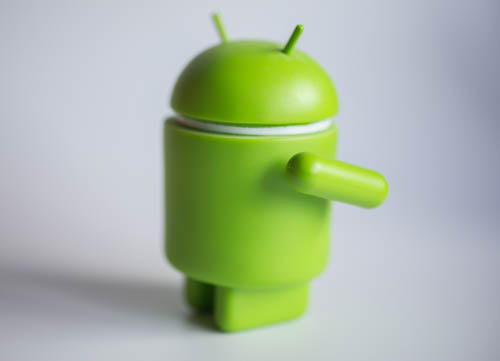
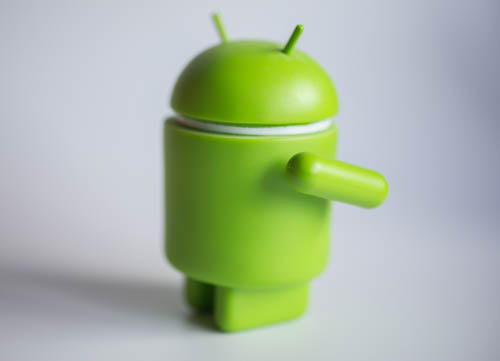
 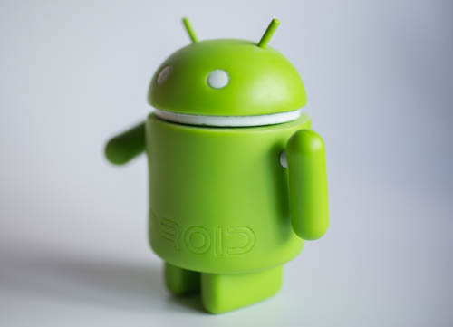
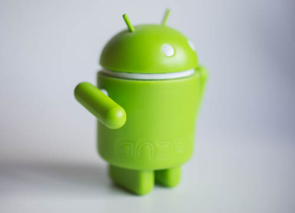
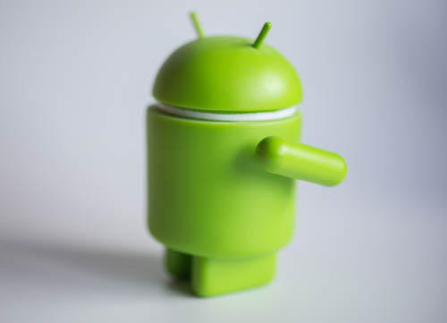
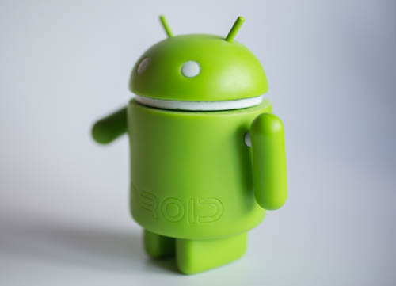
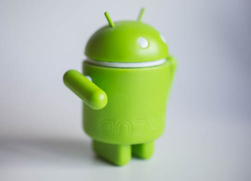
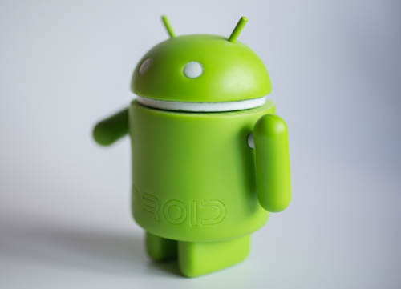
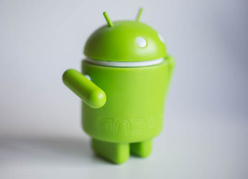
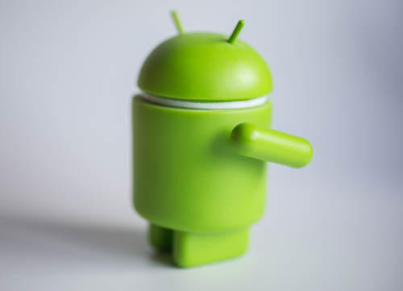
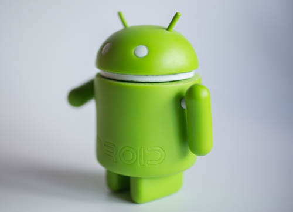
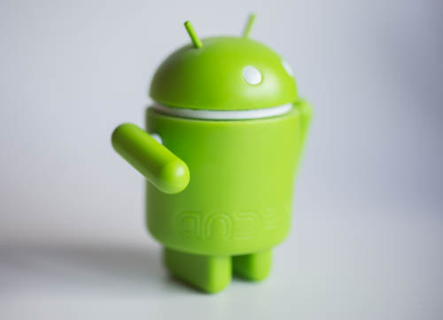